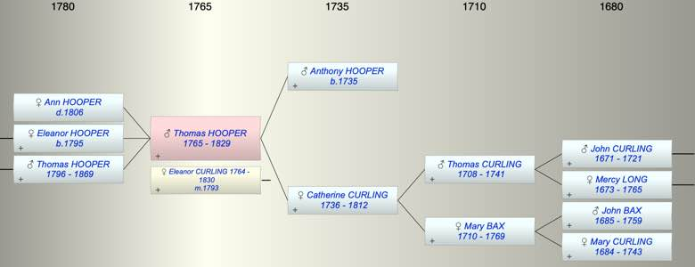
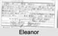

| [Index] |
| Thomas Abbott HOOPER (1765 - 1829) |
|  |
|  |
| b. 1765 |
| m. 25 Apr 1793 Eleanor CURLING (1764 - 1830) at St Saviour, Southwark |
| d. 1829 at Southwark aged 64 |
| Parents: |
| Anthony HOOPER (1735 - ) |
| Catherine CURLING (1736 - 1812) |
| Siblings (2): |
| Mary HOOPER (1763 - 1800) |
| Anthony HOOPER (1764 - ) |
| Children (3): |
| Ann Maria HOOPER ( - 1806) |
| Eleanor HOOPER (1795 - ) |
| Thomas HOOPER (1796 - 1869) |
| Events in Thomas Abbott HOOPER (1765 - 1829)'s life | |||||
| Date | Age | Event | Place | Notes | Src |
| 1765 | Thomas Abbott HOOPER was born | Note 1 | |||
| 25 Apr 1793 | 28 | Married Eleanor CURLING (aged 29) | St Saviour, Southwark | Note 2 | |
| 1795 | 30 | Birth of daughter Eleanor HOOPER | Southwark | Note 3 | |
| 1796 | 31 | Birth of son Thomas HOOPER | Southwark | ex 1851 census | |
| 14 Aug 1806 | 41 | Death of daughter Ann Maria HOOPER | Southwark | Note 4 | |
| 19 May 1812 | 47 | Death of mother Catherine CURLING (aged 76) | St Laurence | aged 76 ex MIs | |
| 1829 | 64 | Thomas Abbott HOOPER died | Southwark | Note 5 | |
| Created on a Mac™ using iFamily for Mac™ on 8 Oct 2023 |